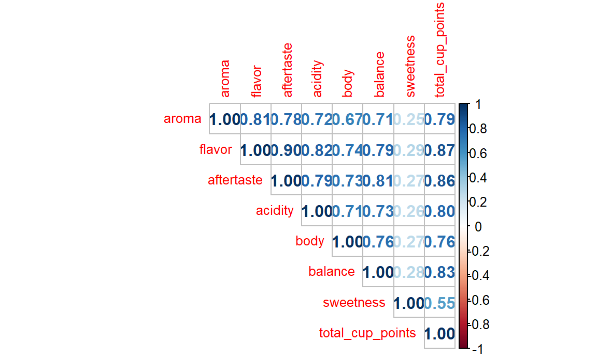
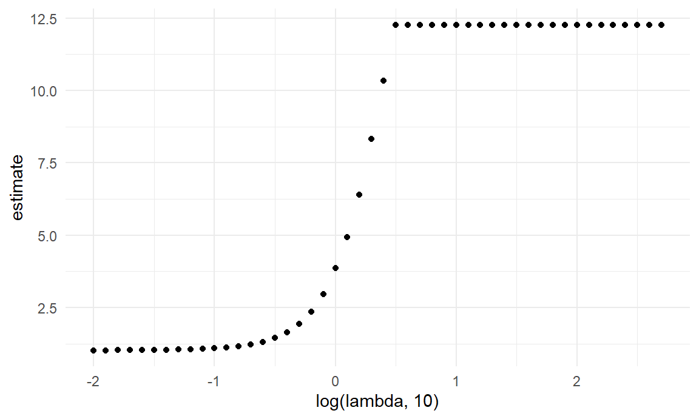

Analysis
ratings_df = read_csv("data/coffee_ratings.csv") %>%
janitor::clean_names() %>%
select(total_cup_points, species, country_of_origin,
region, grading_date, variety,processing_method,
aroma, flavor, aftertaste, acidity, body, balance,
sweetness, moisture, color, altitude_low_meters,
altitude_high_meters, altitude_mean_meters,) %>%
mutate(grading_year = str_extract(grading_date, "\\d{4}"),
species = as.factor(species),
variety = as.factor(variety),
processing_method = as.factor(processing_method),
moisture = as.factor(moisture),
color = as.factor(color))Correlation Test
features <- c("aroma", "flavor", "aftertaste", "acidity", "body", "balance", "sweetness")
target <- "total_cup_points"We chose the variables associated with sensory scores, which are aroma, flavor, aftertaste, acidity, body, balance, and sweetness, as the predictor variables of the model, and the total cup points as the response variable.
corr_matrix = cor(ratings_df[, c(features, target)], use = "complete.obs")
corrplot(corr_matrix, method = "number", type = "upper", tl.cex = 0.8)
Before building the model, we performed the correlation test between these variables. We found a high correlation between almost all independent variables and the dependent variable, and although the correlation between sweetness and total cup points was the lowest, there was still some correlation. Since there were so many predictors, we would choose to build a lasso model.
Lasso Model
x = as.matrix(ratings_df[, features])
y = ratings_df |> pull(total_cup_points)lambda = 10^(seq(-2, 2.75, 0.1))
lasso_fit =
glmnet(x, y, lambda = lambda)
lasso_cv =
cv.glmnet(x, y, lambda = lambda)
lambda_opt = lasso_cv[["lambda.min"]]Generating a sequence of lambda values to create a range of lambda values on a logarithmic scale to ensure our proper exploration of the regularization strength.
lasso_fit |>
broom::tidy() |>
select(term, lambda, estimate) |>
complete(term, lambda, fill = list(estimate = 0) ) |>
filter(term != "(Intercept)") |>
ggplot(aes(x = lambda, y = estimate, group = term, color = term)) +
geom_path() +
geom_vline(xintercept = lambda_opt, color = "blue", linewidth = 1.2) +
theme(legend.position = "none")
As lambda increases, the coefficients shrink toward zero.
lasso_cv |>
broom::tidy() |>
ggplot(aes(x = log(lambda, 10), y = estimate)) +
geom_point()
This plot visualizes the effect of different lambda values on the estimated coefficients.
At smaller values of log(lambda, 10), the estimated coefficients are smaller or close to zero.As log(lambda, 10) increases, the coefficients stabilize and converge toward specific values.
lasso_fit = glmnet(x, y, lambda = lambda_opt)
lasso_fit |> broom::tidy()## # A tibble: 8 × 5
## term step estimate lambda dev.ratio
## <chr> <dbl> <dbl> <dbl> <dbl>
## 1 (Intercept) 1 5.08 0.01 0.923
## 2 aroma 1 1.17 0.01 0.923
## 3 flavor 1 1.97 0.01 0.923
## 4 aftertaste 1 1.73 0.01 0.923
## 5 acidity 1 0.895 0.01 0.923
## 6 body 1 0.579 0.01 0.923
## 7 balance 1 1.66 0.01 0.923
## 8 sweetness 1 1.73 0.01 0.923The intercept value is 5.08, which represents the baseline predicted
value of total_cup_points when all predictors are zero.
All predictors (aroma, flavor,
aftertaste, acidity, body,
balance, sweetness) have non-zero
coefficients, indicating they contribute to the model at the optimal
lambda.
flavor has the largest coefficient with the value of
1.97, suggesting that flavor is the most influential predictor in
determining the total cup points.
body(0.579) and acidity(0.895) have
relatively the smallest coefficients, indicating that they have a weaker
influence on the total cup points compared to others variables.
The deviance ratio is 0.923, suggesting that the model explains a
significant portion of the variability in
total_cup_points.